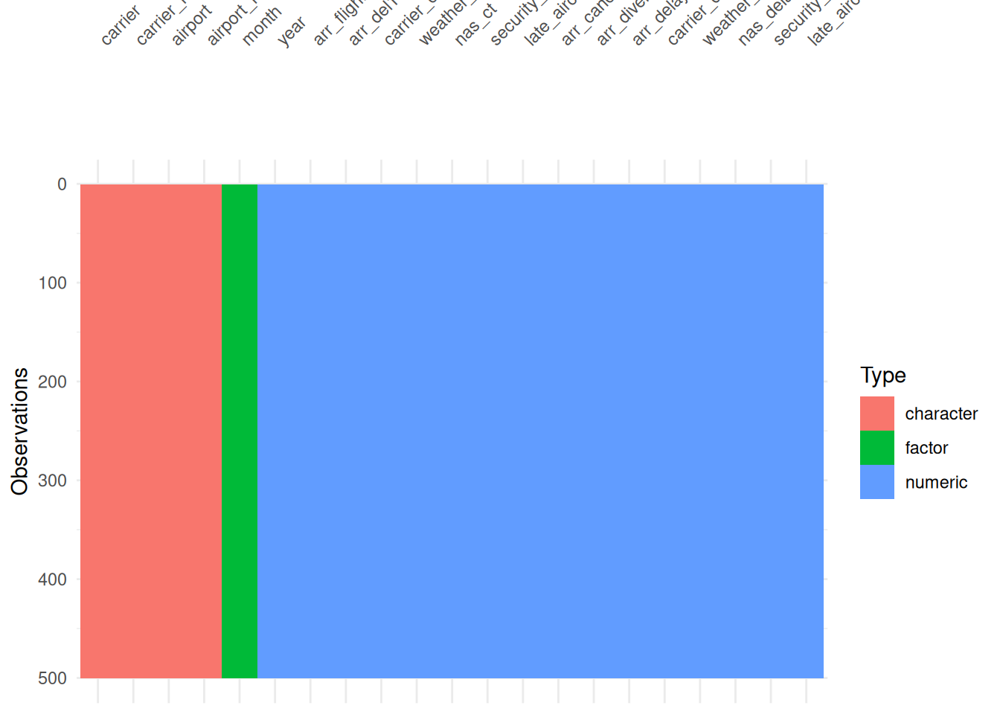

Code
library(tidyverse)Warning: Paket 'tidyverse' wurde unter R Version 4.5.2 erstelltWarning: Paket 'ggplot2' wurde unter R Version 4.5.3 erstelltWarning: Paket 'tidyr' wurde unter R Version 4.5.2 erstelltWarning: Paket 'readr' wurde unter R Version 4.5.3 erstelltWarning: Paket 'purrr' wurde unter R Version 4.5.2 erstelltWarning: Paket 'dplyr' wurde unter R Version 4.5.2 erstelltWarning: Paket 'stringr' wurde unter R Version 4.5.2 erstelltWarning: Paket 'lubridate' wurde unter R Version 4.5.2 erstellt── Attaching core tidyverse packages ──────────────────────── tidyverse 2.0.0 ──
✔ dplyr 1.1.4 ✔ readr 2.2.0
✔ forcats 1.0.1 ✔ stringr 1.6.0
✔ ggplot2 4.0.3 ✔ tibble 3.3.0
✔ lubridate 1.9.4 ✔ tidyr 1.3.2
✔ purrr 1.2.0
── Conflicts ────────────────────────────────────────── tidyverse_conflicts() ──
✖ dplyr::filter() masks stats::filter()
✖ dplyr::lag() masks stats::lag()
ℹ Use the conflicted package (<http://conflicted.r-lib.org/>) to force all conflicts to become errorsCode
library(visdat)
library(skimr)
library(here)Warning: Paket 'here' wurde unter R Version 4.5.2 erstellthere() starts at C:/Users/lkill/OneDrive/Dokumente/Uni/GitHub/statprog2-projectCode
delay <- read_csv(here("data", "raw", "delay_short.csv"))Rows: 55000 Columns: 21
── Column specification ────────────────────────────────────────────────────────
Delimiter: ","
chr (4): carrier, carrier_name, airport, airport_name
dbl (17): year, month, arr_flights, arr_del15, carrier_ct, weather_ct, nas_c...
ℹ Use `spec()` to retrieve the full column specification for this data.
ℹ Specify the column types or set `show_col_types = FALSE` to quiet this message.Code
glimpse(delay)Rows: 55,000
Columns: 21
$ year <dbl> 2009, 2004, 2019, 2019, 2025, 2022, 2009, 2006, 20…
$ month <dbl> 5, 12, 12, 6, 9, 9, 3, 12, 12, 2, 7, 9, 4, 6, 7, 6…
$ carrier <chr> "AS", "AA", "C5", "OH", "C5", "YV", "OO", "DL", "E…
$ carrier_name <chr> "Alaska Airlines Inc.", "American Airlines Inc.", …
$ airport <chr> "DCA", "OAK", "BTV", "SRQ", "ECP", "VPS", "CDC", "…
$ airport_name <chr> "Washington, DC: Ronald Reagan Washington National…
$ arr_flights <dbl> 93, 153, 60, 90, 46, 8, 58, 9, 26, 108, 55, 60, 26…
$ arr_del15 <dbl> 12, 52, 17, 16, 4, 1, 8, 1, 5, 20, 8, 19, 23, 16, …
$ carrier_ct <dbl> 4.63, 18.16, 7.83, 3.43, 1.24, 0.00, 1.67, 1.00, 1…
$ weather_ct <dbl> 0.00, 3.84, 0.27, 2.84, 0.00, 0.00, 0.00, 0.00, 0.…
$ nas_ct <dbl> 7.37, 14.53, 3.92, 3.91, 1.19, 1.00, 2.47, 0.00, 0…
$ security_ct <dbl> 0.00, 1.85, 0.00, 0.00, 0.00, 0.00, 0.00, 0.00, 0.…
$ late_aircraft_ct <dbl> 0.00, 13.61, 4.98, 5.83, 1.57, 0.00, 3.87, 0.00, 2…
$ arr_cancelled <dbl> 0, 2, 2, 1, 0, 1, 1, 0, 0, 3, 1, 1, 0, 0, 0, 0, 1,…
$ arr_diverted <dbl> 1, 0, 0, 1, 1, 0, 0, 0, 0, 0, 0, 0, 1, 0, 0, 0, 0,…
$ arr_delay <dbl> 578, 2860, 1654, 1604, 154, 22, 353, 20, 621, 859,…
$ carrier_delay <dbl> 306, 935, 955, 696, 37, 0, 57, 20, 111, 521, 84, 4…
$ weather_delay <dbl> 0, 314, 18, 234, 0, 0, 0, 0, 0, 15, 28, 311, 16, 0…
$ nas_delay <dbl> 272, 466, 157, 142, 29, 22, 96, 0, 120, 28, 69, 71…
$ security_delay <dbl> 0, 64, 0, 0, 0, 0, 0, 0, 0, 0, 0, 0, 0, 100, 0, 0,…
$ late_aircraft_delay <dbl> 0, 1081, 524, 532, 88, 0, 200, 0, 390, 295, 372, 1…Code
vis_dat(head(delay, 500))
Code
skim(select(delay,
arr_flights,
arr_del15,
arr_delay))| Name | select(delay, arr_flights… |
| Number of rows | 55000 |
| Number of columns | 3 |
| _______________________ | |
| Column type frequency: | |
| numeric | 3 |
| ________________________ | |
| Group variables | None |
Variable type: numeric
| skim_variable | n_missing | complete_rate | mean | sd | p0 | p25 | p50 | p75 | p100 | hist |
|---|---|---|---|---|---|---|---|---|---|---|
| arr_flights | 81 | 1 | 352.28 | 974.34 | 1 | 54 | 110 | 247 | 21688 | ▇▁▁▁▁ |
| arr_del15 | 122 | 1 | 68.20 | 190.39 | 0 | 8 | 20 | 51 | 5778 | ▇▁▁▁▁ |
| arr_delay | 81 | 1 | 4134.90 | 12568.32 | 0 | 399 | 1144 | 2982 | 409579 | ▇▁▁▁▁ |